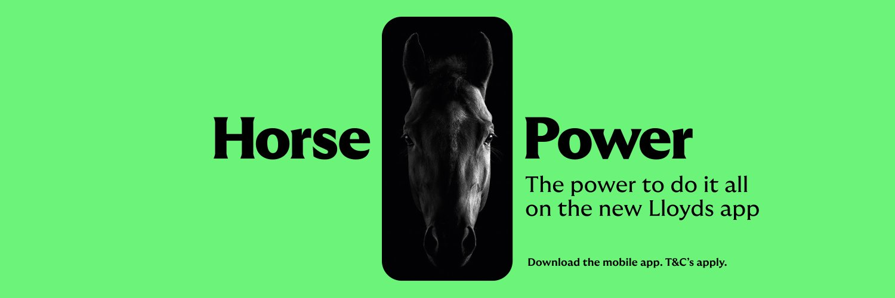

Beside the horse.
The Lloyds symbol as supplied, the current v3 Platform mark, and variant A, all at the same height. This is where the family likeness is judged.
Navy and silver read as another bank beside the horse. Black panels share the horse's weight, and one green highlight follows a curve, as the horse's stripe does.
Four variants, one geometry.
Each on white, black and Lloyds green, at 256, 64, 32 and 16px. At 32px and below the small cut takes over, with its wider gaps.
The Frontier F, variant A
The same tones as the S. Shown at 128, 32 and 16px.
In LBG colours.
The same geometry in the LBG theme tones: crimson the primary, navy for structure, gold the single highlight. Flat fills only. Each on white, on LBG navy #15223E and beside the horse, at 256, 64, 32 and 16px. At 32px and below the small cut takes over.
G, navy with crimson Cs, was dropped. With a gold middle it puts three hues in one small mark. Crimson and gold fight for the eye, and at 16px it reads as a festive badge rather than one highlight. The LBG rule is a single gold highlight, and G breaks it.
A or E.
Variant A in Lloyds green and variant E in LBG navy and gold, beside the horse at the same height.
Beside the horse, A sits better. It shares the horse's black weight and its green, so the two read as one family. E is the more polished mark on its own, and it is the smallest step from v3, but its navy and gold are not on the horse, so next to it E reads as a neighbour rather than a sibling. Use A on anything branded Lloyds Bank, and wherever the horse appears. Use E on group-level material: LBG intranet and SharePoint sites built on the LBG theme, group reports and decks, where crimson, navy and gold are already the palette and the horse is absent.
Co-brand lockup.
Clear space. Call x the width of one panel of the mark, about a fifth of the mark's height. Keep 1x clear all round the lockup. In the second option, leave 1.5x either side of a 1px rule in #323233 as tall as the mark, and size the Lloyds logo so its horse matches the height of the CCS mark. The Lloyds logo is used only as supplied, never recoloured.
A soft, heavy serif.
GT Ultra is commercial and not ours to use. Three free faces, set beside the Horse Power banner.

Hand it on.
Hand it on.
Hand it on.
Fraunces comes closest to GT Ultra Median Black: heavy rounded wedge serifs, low contrast and a big x-height, with the SOFT axis taking the edges off as Median does. WONK stays off so it reads calm, not quirky. Body text stays Source Serif 4.
In use.

Alex Morgan
Service Lead, Colleague & Customer Service
CCS · Part of Lloyds Banking Group
Quarterly business review · Q3
Hand it on.
What we passed on this quarter, and to whom.
What we took, and what we did not.
Took
- Black first: the form is carried in black.
- One green accent, following a curve.
- Flat colour, no gradients.
- Bold green grounds, deep and bright.
- A soft, heavy serif for headlines.
Did not take
- The horse, or any part of its drawing.
- GT Ultra, or any Lloyds font file.
- Any copied artwork. Lloyds files appear only as supplied, for comparison.
Recommendation.
Use variant A. Black panels give the mark the horse's weight, and turning the two Cs green makes our own idea the highlight, the way the green stripe lights the horse. It needs nothing new: the geometry is the refined master, the colours are Lloyds' own, and it holds two tones down to 16px. Keep B for a single lit moment, C for app tiles and D for campaigns. See the family palette for the labs, Frontier and spares.